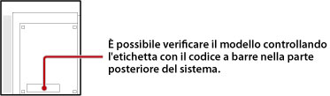

Tipi di dischi riproducibili
In base al modello del sistema PS3™, alcuni tipi di dischi non sono riproducibili. Per informazioni sui tipi di supporto compatibili, consultare la sezione sulla risoluzione dei problemi nella documentazione fornita con il sistema.
Informazioni sui dischi in formato PlayStation®2 e sui Super Audio CD
La tabella di seguito elenca i modelli del sistema PS3™ in grado di riprodurre la maggior parte dei dischi in formato PlayStation®2, oltre che tutti i Super audio CD.

| Area di vendita | Modello |
|---|---|
| Giappone | CECHA00, CECHB00 |
| USA/Canada | CECHA01, CECHB01, CECHE01 |
| America Latina | CECHE11 |
| Europa / Australia / Nuova Zelanda | CECHC02, CECHC03, CECHC04, CECHC08 |
| Corea | CECHE05 |
| Hong Kong / Taiwan / Asia Sud Orientale | CECHA12, CECHB12, CECHE12, CECHA07, CECHB07, CECHA06, CECHE06 |
Informazioni sulla compatibilità
Anche se il proprio sistema PS3™ è in grado di riprodurre i dischi in formato PlayStation®2 e i dischi in formato PlayStation®, la riproduzione può essere differente da quella ottenuta sull'hardware originale. In alcuni casi, i dischi non sono del tutto funzionanti. È possibile visitare il sito Web relativo alla propria zona per ulteriori informazioni sulla compatibilità con le versioni precedenti.
Giappone
http://www.jp.playstation.com/ps3/status/
Stati Uniti / Canada / America Latina
http://www.us.playstation.com/Support/CompatibleStatus
Europa / Australia / Nuova Zelanda
PC http://it.playstation.com/games-media/news/articles/detail/item83413/
PS3™ http://ps3.it.playstation.com/news/detail/item83413/
Corea
https://www.playstation.co.kr/support